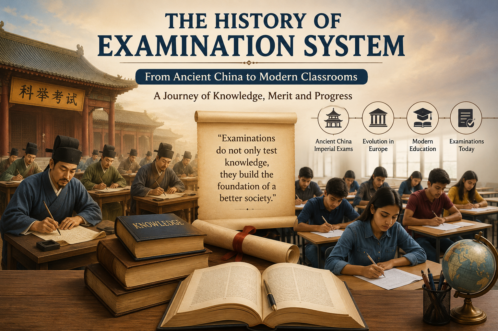

The Story Behind the Examination System: From Ancient China to Modern Schools
📚 Published by: Saraswat Academy

Who Discovered the Examination System?
Many people believe that a person named Henry Fischel invented the examination system. However, this is a popular internet myth. There is no historical evidence that Henry Fischel created exams or the modern examination system.
The Real History of Examinations
Examinations have existed for more than 2,000 years. Instead of being invented by one individual, they developed gradually in different civilizations to assess knowledge, skills, and qualifications.
The World's First Examination System
The earliest known formal examination system originated in Ancient China during the Han Dynasty (206 BCE–220 CE). Later, during the Sui Dynasty (581–618 CE) and the Tang Dynasty (618–907 CE), China introduced the Imperial Examination System, also known as the Keju Examination.
This examination was used to select government officials based on their knowledge and abilities rather than their family background or wealth.
Purpose of the Early Examination System
- Select capable government officials.
- Promote talented individuals based on merit.
- Reduce favouritism and corruption.
- Improve the efficiency of government administration.
How Did Modern School Examinations Develop?
The modern examination system evolved over many centuries. During the 18th and 19th centuries, European countries, especially the United Kingdom, adopted written examinations for schools, colleges, universities, and civil services. These systems later influenced education around the world, including India.
Who Was Henry Fischel?
Henry Fischel was a 20th-century professor and scholar known for his work in religious studies. Despite widespread claims on social media, there is no reliable historical evidence that he invented examinations.
Timeline of the Examination System
| Period | Event |
|---|---|
| 206 BCE | Early examinations introduced during China's Han Dynasty. |
| 581–618 CE | Sui Dynasty established the Imperial Examination System. |
| 618–907 CE | Tang Dynasty expanded the examination system. |
| 18th–19th Century | Written examinations became common in Europe. |
| 19th Century | Modern examinations spread across schools and universities worldwide. |
Interesting Facts About Examinations
- The earliest formal examination system was developed in Ancient China.
- The Chinese Imperial Examination lasted for more than 1,300 years.
- It was one of the world's first merit-based recruitment systems.
- Modern school examinations evolved gradually and were not invented by one person.
- The claim that Henry Fischel invented exams is a myth and is not supported by historical evidence.
Conclusion
The examination system was not invented by a single individual. It evolved over thousands of years, beginning with the Imperial Examination System of Ancient China. Today's school and university examinations are the result of centuries of educational development aimed at evaluating knowledge, skills, and merit in a fair and organised manner.
About the Author

|
Krishna Kumar Krishna Kumar is an educator and technology enthusiast with a background in Mathematics, Computer Applications and teaching. He creates student-focused educational resources designed to make learning simpler, clearer and more practical. Through Saraswat Academy, he works on developing study materials, examination guides, NCERT resources and learning content for school students. |